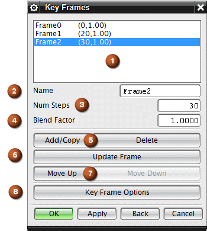

选项 |
描述 |
|||
|---|---|---|---|---|
|
1 |
关键帧列表框 |
列出在选定动画轨迹中所有关键帧的名称和帧数。 Frame0 是初始关键帧，不能删除或移动它。 |
||
|
2 |
名称 |
用于指定关键帧的名称，或者在关键帧已存在的情况下，显示当前选定关键帧的名称。 关键帧名称应该在轨迹内为唯一的，并且其长度可从 1 到 12 个字符。 如果不指定新名称，则 NX 会通过采用当前名称并对其附加一个数字以创建新名称。 |
||
|
3 |
步数 |
指定系统在上一关键帧和当前关键帧之间插入的插值步数。 通过在步数框中输入一个正整数值并单击更新帧，可以指定当前关键帧的步数。 整数值越高，产生的动画越平滑越长。值越低，产生的动画越短且不平稳。
|
||
|
4 |
过渡因子 |
用于在未选择关键帧选项对话框中的使用转台运动选项时，指定过渡因子以生成圆角并为关键帧生成更加光顺的轨迹路径。 过渡因子为零意味着摄像机沿该轨迹直接移动到关键帧位置，然后急转到下一关键帧。 关键帧中的过渡因子越大，帧之间线性路径的偏差也越大。 |
||
|
5 |
添加/复制 |
基于现有帧或默认初始关键帧创建新的关键帧。 |
||
删除 |
从轨迹中删除关键帧。 |
|||
|
6 |
更新帧 |
应用对关键帧所作的任何更改。 更新帧实施对名称、步数和过渡因子选项所作的更改，以及可能使用旋转、缩放、平移或导航进行的任何视图方位更改。 |
||
|
7 |
上移 |
在关键帧列表框中向上移动选定的关键帧。 |
||
下移 |
在关键帧列表框中向下移动选定的关键帧。 |
|||
|
8 |
关键帧选项 |
根据需要打开具有设置关键帧转台运动的选项的关键帧选项对话框。 |